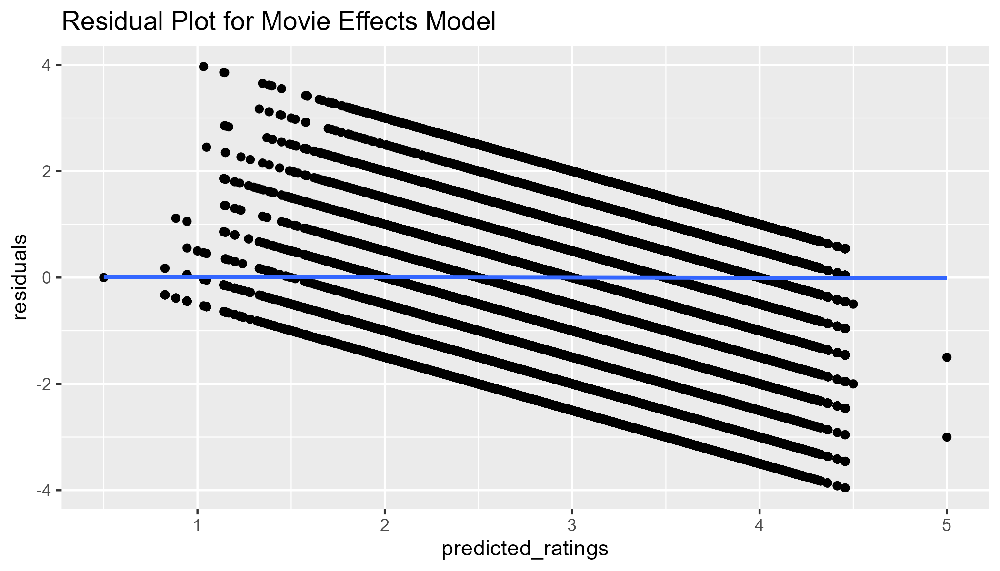
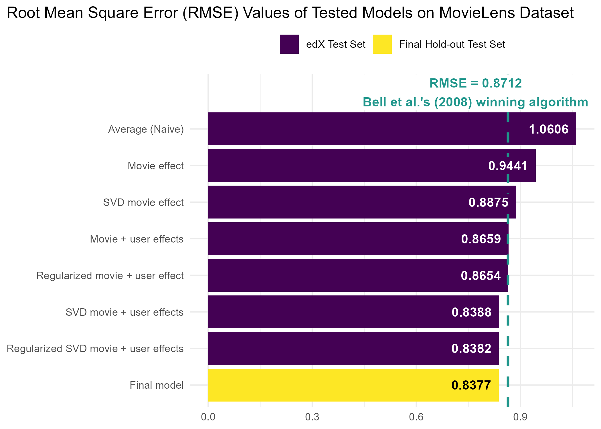

library(tidyverse)
library(caret)
library(patchwork)
library(data.table)
library(Matrix)
library(irlba)
library(doParallel)Capstone MovieLens Project
HarvardX Data Science Professional Certificate
Overview
The MovieLens dataset (GroupLens Research, 2009) contains user movie ratings from MovieLens, a movie recommendation service developed by a research lab at the University of Minnesota (GroupLens Research, 2025). For this project, I created a movie recommendation system using the 10-million version of this dataset.
The goal was to use machine learning to generate predicted movie ratings and root mean squared error (RMSE) score. Below are the steps that were used to:
Create the main training and final hold-out test datasets.
Train a machine learning algorithm using the main training set.
Select a final model based upon the main training set.
Predict movie ratings using the final hold-out test set.
Evaluate the accuracy of the generated predictions using the RMSE metric.
This project simulates on a smaller scale the 2006 Netflix competition, whereby Netflix released a dataset containing 100 million de-identified movie ratings and offered $1 million to whoever could develop an algorithm that was better than the accuracy of its own recommendation system (Bennett & Lanning, 2007).
Methods and Analysis
The following R packages were used:
tidyverse- Used for basic data wrangling and explorationcaret- Needed to create data partitions used for creating training and test setsdata.table- Important for preserving computing memory and enhancing processing speedMatrix- Used for creating sparse matrix objects that assist with processing speed and memoryirlba- Used for singular value decomposition on sparse matricesdoParallel- Assists with core parallel processing for processing speed and memory usage
Creating Main Training and Final Hold-out Datasets
The following code was developed by the HarvardX Team for the course, PH125.9x: Data Science: Capstone. The purpose of creating the edx dataset is to ensure reproducibility to train, develop, and select the final algorithm used for evaluating the RMSE. We will use this dataset for separating into training and test sets, as well as cross-validation in designing and testing the final algorithm. The final_holdout_test dataset will be used to test the final algorithm.
##########################################################
# Create edx and final_holdout_test sets
##########################################################
# MovieLens 10M dataset:
# https://grouplens.org/datasets/movielens/10m/
# http://files.grouplens.org/datasets/movielens/ml-10m.zip
options(timeout = 120)
dl <- "ml-10M100K.zip"
if(!file.exists(dl))
download.file("https://files.grouplens.org/datasets/movielens/ml-10m.zip", dl)
ratings_file <- "ml-10M100K/ratings.dat"
if(!file.exists(ratings_file))
unzip(dl, ratings_file)
movies_file <- "ml-10M100K/movies.dat"
if(!file.exists(movies_file))
unzip(dl, movies_file)
ratings <- as.data.frame(str_split(read_lines(ratings_file), fixed("::"), simplify = TRUE),
stringsAsFactors = FALSE)
colnames(ratings) <- c("userId", "movieId", "rating", "timestamp")
ratings <- ratings %>%
mutate(userId = as.integer(userId),
movieId = as.integer(movieId),
rating = as.numeric(rating),
timestamp = as.integer(timestamp))
movies <- as.data.frame(str_split(read_lines(movies_file), fixed("::"), simplify = TRUE),
stringsAsFactors = FALSE)
colnames(movies) <- c("movieId", "title", "genres")
movies <- movies %>%
mutate(movieId = as.integer(movieId))
movielens <- left_join(ratings, movies, by = "movieId")
# Final hold-out test set will be 10% of MovieLens data
set.seed(1, sample.kind="Rounding") # if using R 3.6 or later
# set.seed(1) # if using R 3.5 or earlier
test_index <- createDataPartition(y = movielens$rating, times = 1, p = 0.1, list = FALSE)
edx <- movielens[-test_index,]
temp <- movielens[test_index,]
# Make sure userId and movieId in final hold-out test set are also in edx set
final_holdout_test <- temp %>%
semi_join(edx, by = "movieId") %>%
semi_join(edx, by = "userId")
# Add rows removed from final hold-out test set back into edx set
removed <- anti_join(temp, final_holdout_test)
edx <- rbind(edx, removed)
rm(dl, ratings, movies, test_index, temp, movielens, removed)
saveRDS(edx, file = "../9_Capstone/data/edx.rds")
saveRDS(final_holdout_test, file = "../9_Capstone/data/final_holdout_test.rds") Data Exploration
Basic Structure
From the training dataset we created above, we see that there are more than 9 million rows of data with six variables: userId, movieId, rating, timestamp, title, and genres. This data also appears to be organized into a long format, meaning that rows of data include repeated values of the first column (userId).
Our ultimate goal is to use this dataset to predict users’ movie ratings in the final hold-out test set. We will need to use data on users, movies, and ratings to predict the outcome variable, but other variables such as when the rating was given (timestamp) or genres may also be useful. The variable titles will be useful when exploring the data descriptively, but is likely not going to be useful since there will undoubtedly be duplicate movie titles. To index movies, the movieId variable will be the most useful.
str(edx)## 'data.frame': 9000055 obs. of 6 variables:
## $ userId : int 1 1 1 1 1 1 1 1 1 1 ...
## $ movieId : int 122 185 292 316 329 355 356 362 364 370 ...
## $ rating : num 5 5 5 5 5 5 5 5 5 5 ...
## $ timestamp: int 838985046 838983525 838983421 838983392 838983392 838984474 838983653 838984885 838983707 838984596 ...
## $ title : chr "Boomerang (1992)" "Net, The (1995)" "Outbreak (1995)" "Stargate (1994)" ...
## $ genres : chr "Comedy|Romance" "Action|Crime|Thriller" "Action|Drama|Sci-Fi|Thriller" "Action|Adventure|Sci-Fi" ...Distinct Values
As mentioned earlier, a long data format means that ID variables are repeated. Therefore, to determine how many users, movies, and genres are included in this dataset, we use the dplyr package to count distinct values in each variable. From this, we see that over 69,000 users rated more than 10,000 movies from 797 unique genres.
edx_ns <- edx |>
reframe(n_users = n_distinct(userId),
n_movies = n_distinct(movieId),
n_genres = n_distinct(genres))edx_ns
## n_users n_movies n_genres
## 1 69878 10677 797Ratings
To explore our outcome variable, we see that ratings range from 0.5 to 5.0.
range(edx$rating)## [1] 0.5 5.0We will store the average rating so that we can visualize ratings in a plot. A histogram shows the negative skew of ratings. Although the average rating is about 3.5, the most common rating was 4 with over 2.5 million ratings in total.
mu <- mean(edx$rating)
edx |>
group_by(rating) |>
count() |>
ggplot() +
geom_col(aes(rating, n)) +
geom_vline(xintercept = mu,
linetype = 2) +
annotate(geom = "text", x = 2.8, y = 3000000,
label = paste0("Mean = ", round(mu, 3)),
color = "red")
Ratings per User
To determine the number of ratings per user, we count rows by userId. Descriptive statistics suggest that the number of user ratings varies considerably with the standard deviation being larger than the mean.
ratings_users <- edx |>
count(userId) |>
reframe(N = n(),
Mean = mean(n),
Median = median(n),
SD = sd(n),
Min = min(n),
Max = max(n),
IQR.25 = quantile(n, 0.25),
IQR.75 = quantile(n, 0.75)) |>
pivot_longer(everything(), names_to = "statistic")
ratings_users## # A tibble: 8 × 2
## statistic value
## <chr> <dbl>
## 1 N 69878
## 2 Mean 129.
## 3 Median 62
## 4 SD 195.
## 5 Min 10
## 6 Max 6616
## 7 IQR.25 32
## 8 IQR.75 141Since the number of ratings per user is so positively skewed, transforming the x axis into log values allows us to see the distribution more clearly.
avg_ratings_per_user <- ratings_users$value[which(ratings_users$statistic=="Mean")]
count(edx, userId) |>
ggplot() +
geom_histogram(aes(n),
bins = 60,
color = "lightgray") +
scale_x_log10() +
geom_vline(xintercept = avg_ratings_per_user,
linetype = 2) +
annotate(geom = "text", x = 350, y = 3500,
label = paste0("Mean = ", round(avg_ratings_per_user, 3)),
color = "red")
Ratings per Movie
As expected, the number of ratings per movie was heavily positively skewed with some movies being much more popular than others.
ratings_movies <- edx |>
count(movieId)
ratings_movies_summary <- ratings_movies |>
reframe(N = n(),
Mean = mean(n),
Median = median(n),
SD = sd(n),
Min = min(n),
Max = max(n),
IQR.25 = quantile(n, 0.25),
IQR.75 = quantile(n, 0.75)) |>
pivot_longer(everything(), names_to = "statistic")ratings_movies_summary
## # A tibble: 8 × 2
## statistic value
## <chr> <dbl>
## 1 N 10677
## 2 Mean 843.
## 3 Median 122
## 4 SD 2238.
## 5 Min 1
## 6 Max 31362
## 7 IQR.25 30
## 8 IQR.75 565Over 100 movies only had a single rating, whereas the most frequently-rated movie, Pulp Fiction, had 31,362 ratings.
filter(ratings_movies, n == 1) |>
nrow()## [1] 126most_ratings <- ratings_movies |>
left_join(select(edx, movieId, title) |> distinct(),
by = "movieId") |>
filter(n == max(n))most_ratings
## movieId n title
## 1 296 31362 Pulp Fiction (1994)The histogram (log-scale transformed) reveals that the average number of ratings per movie is somewhere between 50 and 500, despite the fact that the mean is more than 800. Based upon this data and the data above, we can infer that there are going to be many instances where users did not rate a given movie. The challenge, therefore, is to estimate what their ratings would be on all 10,000+ movies.
avg_ratings_per_movie <- ratings_movies_summary |>
filter(statistic == "Mean") |>
pull(value)
count(edx, movieId) |>
ggplot() +
geom_histogram(aes(n),
bins = 60,
color = "lightgray") +
scale_x_log10() +
geom_vline(xintercept = avg_ratings_per_movie,
linetype = 2) +
annotate(geom = "text", x = 4275, y = 390,
label = paste0("Mean = ", round(avg_ratings_per_movie, 3)),
color = "red")
Creating Test and Training Sets for Model Testing
Even though we created the training (edx) and testing (final_holdout_test) datasets, we will only use the final_holdout_test dataset after choosing the final machine learning algorithm. Therefore, we will use the edx dataset to create training and testing partitions to be used during model training. Using the caret package, we generate the indexes for randomly dividing the data into two parts. Then, we create the training and test sets using the indexes generated. The methodology here uses the same logic that the HarvardX Team used above for creating the edx and final_holdout_test sets.
First, we use the caret’s createDataPartition() function to generate indices that are used to subset 90% of the edx dataset into the main training set. Then, we create a temp dataset that will serve as the basis of the indices generated by the data partition, representing 10% of edx data. To ensure that all users and movies appear in the test set, we use dplyr’s semi_join() function to return all rows from temp with a match in train_set. Next, we use anti_join() to return all rows from temp that don’t appear in test_set. Finally, we use rbind()to combine the removed rows with the matched rows to produce our final test_set.
y = edx$rating
set.seed(7)
test_index <- caret::createDataPartition(y, times = 1, p = 0.1, list = FALSE)
train_set <- edx[-test_index,]
temp <- edx[test_index,]
test_set <- temp |>
semi_join(train_set, by = "movieId") |>
semi_join(train_set, by = "userId")
removed <- anti_join(temp, test_set)
train_set <- rbind(train_set, removed)
saveRDS(train_set, "../../9_Capstone/data/train-set.rds")
saveRDS(test_set, "../../9_Capstone/data/test-set.rds")RMSE
To test model accuracy, we will use a commonly used metric for evaluating the extent to which predicted ratings matched actual ratings. When Netflix opened a competition for the best algorithm to predict user ratings (Lohr, 2009), they used the root mean square error (RMSE) to compare the best algorithm against their current algorithm used at the time (Netflix & Crawford, 2017). The winning algorithm achieved an RMSE of of 0.8712 (Bell et al., 2007).
RMSE is often used as an evaluation metric of regression model accuracy. It answers the question: How accurate are a model’s predicted values? Because of how it is calculated, RMSE directly measures prediction error in the same units as the outcome variable. The $1 million prize-winning algorithm, therefore, estimated actual movie ratings within 0.8712 stars on the 5-star rating scale.
The mathematical formula for calculating RMSE is:
\[ \mathrm{RMSE} = \sqrt{\frac{1}{n} \sum_{i=1}^{n} (y_i - \hat{y}_i)^2} \]
here:
- \(y_i\) is the actual rating for observation \(i\),
- \(\hat{y}_i\) is the predicted rating for observation \(i\),
- \(n\) is the total number of observations
In effect, RMSE calculates the residuals, squares them, finds the mean of the squared residuals, and takes the square root.
Then, a simplified formula of RMSE is:
\[ \mathrm{RMSE} = \sqrt{\text{mean}\Big((y_i - \hat{y}_i)^2\Big)} \]
here:
- \(y_i\) is the vector of actual ratings
- \(\hat{y}_i\) is the vector of predicted values
We can write a function in R to calculate RMSE. The predicted ratings will be generated from whatever model we choose based upon the training datset, and the actual ratings will come from the testing dataset.
RMSE <- function(actual_ratings, predicted_ratings){
sqrt(mean((actual_ratings - predicted_ratings)^2))
}Average Model
To benchmark our models, we estimate the naive RMSE using the average rating in the training dataset to predict the test set’s ratings. This code was adapted from Introduction to Data Science (Irizarry, 2019).
Our average model would look like this: \(Y_{u,i} = \mu + \varepsilon_{u,i}\) with \(\varepsilon_{u,i}\) independent errors sampled from the same distribution centered at 0 and \(\mu\), the actual “true” rating for all movies.
Since we don’t know the “true” rating for all movies, we predict all unknown ratings with \(\hat{\mu}\) using the average of all ratings from the training set. Given this model, our benchmark RMSE is 1.0606.
mu_hat <- mean(train_set$rating)
naive_rmse <- RMSE(test_set$rating, mu_hat)naive_rmse
## [1] 1.060636By plotting the residuals, we see a plot that looks identical to the histogram of the ratings. This is because we have effectively centered all ratings around the mean.
naive_df <- select(test_set, rating) |>
mutate(residuals = rating - mu_hat)
select(naive_df, residuals) |>
ggplot(aes(x = residuals)) +
geom_histogram(binwidth = 0.5,
color = "lightgray") +
geom_vline(xintercept = 0,
linetype = 2)
Movie Effect Model
Now that we have our naive RMSE to benchmark all other models, we start with modeling movie effects (also called bias) using linear regression. Here we add to our previous model a bias term \(b_i\) to represent the average rating for movie \(i\):
\[ Y_{u,i} = \mu + b_i + \varepsilon_{u,i} \] here:
- \(Y_{u,i}\) is the rating given by user \(u\) of movie \(i\)
- \(\mu\) is the “true” rating for all movies
- \(b_i\) is the “true” rating for movie \(i\)
- \(\varepsilon_{u,i}\) are independent errors sampled from the same distribution centered at 0
Remember that in our RMSE equation we need to calculate \(\hat{y}_i\), the predicted rating for observation \(i\). Our goal, then, is to find the values that minimize the distance between our fitted model and the data (i.e., the least squares estimates). Here our model suggests that we can obtain our least squares estimates by taking the average for all ratings and add the average rating of each movie \(i\). The most common way to do this in R is by using the lm function as shown below. However, do not run this code. We have over 10,000 movies and each movie would be a predictor in the model, meaning that R would attempt to calculate over 10,000 coefficient estimates, standard errors, t statistics, and p values.
# DO NOT RUN
fit <- lm(rating ~ movieId, data = train_set)Because the least squares estimate \(\hat{b}_i\) is simply the average of each user’s rating of movie \(i\) minus the average of all ratings, we can calculate \(\hat{b}_i\) as follows.
movie_avgs <- train_set |>
group_by(movieId) |>
summarize(avg_rating = mean(rating),
b_i_hat = mean(rating - mu_hat))We then, calculate the predicted values as our model indicates by adding \(\hat{\mu}\) (average of all ratings) to \(\hat{b}_i\) (average rating of each movie).
predicted_ratings <- mu_hat + test_set |>
left_join(movie_avgs, by="movieId") |>
pull(b_i_hat)With our predicted ratings from our movie effects model, we see that our RMSE improves.
fit1_rmse <- RMSE(predicted_ratings, test_set$rating)fit1_rmse
## [1] 0.9441454Although our accuracy metric improved, our predicted ratings were only accurate within 0.944 points. To explore why relying on movie effects alone may be insufficient, we can calculate the top 1% of movies and store these movie’s ID numbers. In this case, the top 1% of movies refers to movies that had average ratings in the top 1 percentile of all movies. We, then, create a data frame that includes the counts of the number of user ratings.
top_movies <- movie_avgs |>
filter(b_i_hat > quantile(b_i_hat, .99)) |>
pull(movieId)
top1perc <- train_set |>
left_join(movie_avgs, by = "movieId") |>
filter(movieId %in% top_movies) |>
group_by(movieId, title) |>
reframe(n = n(), avg_rating) |>
distinct()There were 107 movies that were ranked in the top 1% with average ratings at or above 4.1947.
nrow(top1perc)
## [1] 107
range(top1perc$avg_rating)
## [1] 4.194669 5.000000If we look at a random sample of this data frame we see that the number of ratings vary considerably by movie.
top1perc |>
slice_sample(n = 10)
## # A tibble: 10 × 4
## movieId title n avg_rating
## <int> <chr> <int> <dbl>
## 1 1212 Third Man, The (1949) 2668 4.31
## 2 593 Silence of the Lambs, The (1991) 27258 4.21
## 3 904 Rear Window (1954) 7172 4.32
## 4 6123 Sunless (Sans Soleil) (1983) 52 4.21
## 5 1204 Lawrence of Arabia (1962) 5472 4.21
## 6 1136 Monty Python and the Holy Grail (1975) 13216 4.21
## 7 58185 Please Vote for Me (2007) 1 4.5
## 8 4973 Amelie (Fabuleux destin d'Amélie Poulain, Le) (2001) 7800 4.24
## 9 63772 Bullfighter and the Lady (1951) 2 4.25
## 10 5291 Rashomon (Rashômon) (1950) 1289 4.23In fact, we see that among the top rated 1% of movies, almost half of them were only rated once. This would be analogous to a user sorting movies by rating and then seeing that a large proportion of them had only a single rating.
top1perc |>
ggplot(aes(n)) +
geom_histogram(binwidth = 500,
color = "lightgray") +
labs(title = "Frequency of Ratings for Top 1% of Movies",
x = "Number of Ratings per Movie")
We can also perform a check on the residuals. If the relationship between the ratings and the movie ratings is linear, we should see that there is no relationship between residuals and predicted values when plotting them. With a continuous outcome variable, we would see the residuals “bounce” around the 0 line. Since our outcome variable is on a 5-point scale, we do not see this pattern. However, given the lack of curvature and that the best-fit line is 0, we see that the variances of the error terms are equal. There do appear to be some outliers, such that we predicted 5s but the actual ratings were much lower.
fit1_resid <- test_set |>
left_join(movie_avgs, by='movieId') |>
mutate(predicted_ratings = mu_hat + b_i_hat,
residuals = rating - predicted_ratings)
p_fit1_resid <- fit1_resid |>
ggplot(aes(x = predicted_ratings, y = residuals)) +
geom_point() +
geom_smooth() +
labs(title = "Residual Plot for Movie Effects Model")
p_fit1_resid
Movie & User Effects Model
Since we know that users have a bias in how they rate movies, we will estimate the user bias by adding the term \(b_u\) to represent the average rating for user \(u\) to our model:
\[ Y_{u,i} = \mu + b_i + b_u + \varepsilon_{u,i} \] here:
- \(Y_{u,i}\) is the rating given by user \(u\) of movie \(i\)
- \(\mu\) is the “true” rating for all movies
- \(b_i\) is the “true” rating for movie \(i\)
- \(b_u\) is the “true” rating for user \(u\)
- \(\varepsilon_{u,i}\) are independent errors sampled from the same distribution centered at 0
Similar to before, we can estimate the least squares estimate \(\hat{b}_u\) by taking the mean of \(y_{u,i} - \hat{\mu} - \hat{b}_i\) where \(y_{u,i}\) is the rating of movie \(i\) from user \(u\), \(\hat{\mu}\) is the average of all ratings, and \(\hat{b}_i\) is the least squares estimate of the movie effect we calculated earlier.
user_avgs <- train_set %>%
left_join(movie_avgs, by='movieId') %>%
group_by(userId) %>%
summarize(b_u_hat = mean(rating - mu_hat - b_i_hat))To ensure our predicted values are restricted to values between 0.5 and 5, we include a clamp function.
clamp <- function(x, min = 0.5, max = 5) pmax(pmin(x, max), min)
predicted_ratings <- test_set |>
left_join(movie_avgs, by="movieId") |>
left_join(user_avgs, by="userId") |>
mutate(pred = clamp(mu_hat + b_i_hat + b_u_hat)) %>%
pull(pred)We see that our RMSE has improved even more. We can now estimate within 0.8659 points users’ ratings.
fit2_rmse <- RMSE(predicted_ratings, test_set$rating)fit2_rmse
## [1] 0.8658849Although our residuals look better (no outliers), this model still does not address the fact that less popular movies have least squares estimates as high or higher than popular movies. We need a model that could somehow ignore movie averages with a few user ratings and replace those movie averages with the average of all movies. This is the idea behind regularization.
fit2_resid <- test_set |>
left_join(movie_avgs, by="movieId") |>
left_join(user_avgs, by="userId") |>
mutate(predicted_ratings = clamp(mu_hat + b_i_hat + b_u_hat),
residuals = rating - predicted_ratings)
fit2_resid |>
ggplot(aes(x = predicted_ratings, y = residuals)) +
geom_point() +
geom_smooth() +
labs(title = "Residual Plot for Movie & User Effects Model")
Regularization of Movie & User Effect
The concept of regularization takes into account each predictor’s effect size when calculating their least squares estimates. In this case, we assume that movies or users with a large number of ratings are more reliable than movies or users with a small number of ratings. When calculating the mean of the least squares estimate, we add a penalty term \(\lambda\) to the sample size in the denominator. Therefore, in the case of estimating the movie effect term \(b_i\), we previously calculated \(mean(y_{u,i} - \hat{\mu})\) or written out in summation notation:
\[ \frac{1}{n}\sum_{i=1}^{n} (y_{u,i} - \hat{\mu}) \]
However with a penalized least squares estimate of \(b_i\), we add \(\lambda\) as a penalty term to the denominator:
\[ \frac{1}{n+\lambda}\sum_{i=1}^{n} (y_{u,i} - \hat{\mu}) \]
If we use, for example, \(\lambda = 5\) This means that for movies like The Shawshank Redemption with over 25,000 ratings in the training set, adding 5 to the n() calculation will be trivial. But for movies with only 1 rating, dividing by n() + 5 will mean that the least squares estimate will be essentially 0 after subtracting \(\hat{b}_i\) from the average \(\hat{\mu}\).
To ensure that we select the optimal value of \(\lambda\), we will write a function that estimates each of the terms in our model based upon different levels of lambdas. We, then, calculate the RMSE for each of the models that differ only based on the lambdas value. Because we are calculating these effects 41 times (length of lambdas), it’s a good idea to document processing time using the Sys.time() function.
lambdas <- seq(0, 10, 0.25)
t1 <- Sys.time()
rmses <- sapply(lambdas, function(l){
mu <- mean(train_set$rating)
b_i <- train_set %>%
group_by(movieId) %>%
summarize(b_i = sum(rating - mu)/(n()+l))
b_u <- train_set %>%
left_join(b_i, by="movieId") %>%
group_by(userId) %>%
summarize(b_u = sum(rating - b_i - mu)/(n()+l))
predicted_ratings <- test_set %>%
left_join(b_i, by = "movieId") %>%
left_join(b_u, by = "userId") %>%
mutate(pred = clamp(mu + b_i + b_u)) %>%
pull(pred)
return(RMSE(predicted_ratings, test_set$rating))
})
Sys.time() - t1## Time difference of 1.942676 minsTo visualize whether we selected an appropriate range for \(\lambda\), we plot the RMSE values against the values in lambdas.
ggplot(data.frame(lambdas, rmses)) +
geom_point(aes(lambdas, rmses))
Despite the extra computation, we see that the \(\lambda\) with the lowest RMSE was not much better than the RMSE from the non-regularized movie & user effects model: fit2_rmse = 0.8659. This suggests that we need a model that can take into account the patterns of users and movies beyond their averages.
lambda_m3 <- lambdas[which.min(rmses)]
fit3_rmse <- min(rmses)lambda_m3
## [1] 4.25
fit3_rmse
## [1] 0.8654354Dimension Reduction and SVD
Problem with Unexplained Variance
Despite estimating movie-to-movie differences through \(b_i\) and user-to-user differences through \(b_u\), we are not estimating variation related to groups of movies and users with similar rating patterns. If we look at the residuals for some popular films, we see that non-zero correlations exist. This is expected for movies of the same franchise (Plot A) or the same genre (Plot B). We also see this for overlapping genres (Plot C), as well as non-overlapping genres (Plot D). Because residuals are supposed to be uncorrelated with each other, this suggests that our current model is not capturing certain commonalities between movies and users. Moreover, the commonalities that exist are not readily apparent from knowing the genre, release date, or title.

PCA via SVD as Method for Dimension Reduction
Because we have 10,677 predictors (movies) in our model, a popular method for reducing the number of predictors is through principal component analysis (PCA). PCA seeks to identify groups of predictors, whereby predictors within groups are relatively similar and the groups are relatively independent of one another. In this case, the groups of predictors are called principal components (PCs).
Traditionally, PCs are extracted using eigenvalue decomposition in which the \(p \times p\) covariance matrix (i.e., the matrix of correlations between predictors) is computed and, then, transformed into a matrix of \(p \times p\) eigenvalues (i.e., the variance explained by each PC) using matrix factorization via matrix algebra. See Penn State (2025) for an explanation of eigenvalue calculations.
Because calculating the covariance matrix is computationally intensive on large datasets, an alternative approach to extracting PCs is singular value decomposition (SVD). With SVD, we can avoid calculating the covariance matrix altogether and instead transform the dataset matrix, \(\textbf{X}\), of size \(n \times p\) (number of \(n\) users by number of \(p\) movies) into three special matrices. Two matrices are orthogonal (rotated): \(\textbf{U}\) and \(\textbf{V}^\top\). A third matrix, \(\Sigma\) is diagonal matrix.
The mathematical formula for SVD then is:
\[ \textbf{X} = \textbf{U}\Sigma\textbf{V}^\top \] Where:
- \(\textbf{X}\) is the data matrix of size \(n \times p\)
- \(\textbf{U}\) is the left singular vectors of size \(n \times n\)
- \(\textbf{V}^\top\) is the right singular vectors of size \(p \times p\)
- \(\Sigma\) is the singular values matrix of size \(n \times p\)
The two orthogonal matrices, \(\textbf{U}\) and \(\textbf{V}^\top\), contain information about the column or row space of \(\textbf{X}\). \(\textbf{U}\) contains information about the column space of \(\textbf{X}\) and summarizes information of different users based on movies. \(\textbf{V}^\top\) contains information about the row space of \(\textbf{X}\) and summarizes information of different movies based on users. The columns of \(\textbf{U}\) and rows of \(\textbf{V}^\top\) are hierarchically arranged, such that the first column of \(\textbf{U}\) and the first row of \(\textbf{V}^\top\) describe more variance than the second column of \(\textbf{U}\) and the second row of \(\textbf{V}^\top\) and so on.
The importance of the various columns of \(\textbf{U}\) and rows of \(\textbf{V}^\top\), therefore, is encoded in the diagonal matrix, \(\Sigma\), in which the values are arranged in descending order by importance, such that, the first value \(\sigma_1\) is used to explain more variance in \(\textbf{X}\) than the second value \(\sigma_2\), etc. For these matrices, the first \(p\) columns can be thought of as as factors or PCs that describe the interactions between users and movies.
In cases where there are more users (\(n\)) than predictors (\(p\)), calculating the SVD of \(\textbf{X}\) means that only the first \(p\) columns of \(\textbf{U}\) and the first \(p \times p\) block of \(\Sigma\) are selected (the \(p \times p\) matrix \(\textbf{V}^\top\) remains unchanged). Given the hierarchical structure of \(\Sigma\), there will be very small singular values toward the bottom that are not very important. We can, therefore, truncate the calculation to only include the first \(k\) singular values of \(\Sigma\) . These \(k\) values are the factors that describe most of the variation in \(\textbf{X}\). When we truncate to \(k\) factors, we approximate the matrix \(\textbf{X}\) through the following formula:
\[ \textbf{X}_{n \times p} \approx \textbf{U}_{n \times k} \times \Sigma_{k \times k} \times \textbf{V}^\top_{k \times n} = \hat{\textbf{X}}_{n \times p} \]
Therefore, using SVD for dimension reduction is more efficient than performing a PCA. To properly calculate the predicted values using SVD, the data must be centered. When the data in matrix \(\textbf{X}\) is centered, then \(\textbf{X}^\top\textbf{X}/(n - 1)\) is equal to the covariance matrix (for further explanation of SVD, see Brunton & Kutz, 2019; Siregar, n.d.; Visual Kernel, 2022).
Problem with Sparse Data
As mentioned above, SVD is calculated directly from the data matrix. This means that we need to transform our current long-format data into a wide-format matrix. This is different from how we were able to calculate movie and user effects earlier by grouping a tidy data frame by movieId or userId and then calculating the least squares estimates. To illustrate, see the sample table below of some movies shown earlier.
long_sample <- test_set |>
filter(movieId %in% c(2959, 260, 1210, 25, 1704, 2959, 924, 1208)) |>
select(userId, movieId, rating) |>
slice_sample(n = 10) |>
remove_rownames()long_sample |>
as.matrix()
## userId movieId rating
## [1,] 1690 1210 4
## [2,] 61409 1704 4
## [3,] 36823 1210 4
## [4,] 27385 1210 4
## [5,] 41012 260 5
## [6,] 46423 1210 5
## [7,] 39063 1210 4
## [8,] 7372 1704 1
## [9,] 11374 260 4
## [10,] 63145 25 5To perform SVD on this data, we would need to transform the original data into a user-item matrix. However, even for highly popular films, we see that there are many missing values.
user_item_sample_matrix <- long_sample |>
pivot_wider(id_cols = userId,
names_from = movieId,
values_from = rating) |>
column_to_rownames("userId") |>
as.matrix()user_item_sample_matrix
## 1210 1704 260 25
## 1690 4 NA NA NA
## 61409 NA 4 NA NA
## 36823 4 NA NA NA
## 27385 4 NA NA NA
## 41012 NA NA 5 NA
## 46423 5 NA NA NA
## 39063 4 NA NA NA
## 7372 NA 1 NA NA
## 11374 NA NA 4 NA
## 63145 NA NA NA 5Even though SVD requires less processing power than PCA, SVD does not work well on sparse matrices. If we were to calculate the entire matrix of \(n\) users by \(p\) movies, then we would find that less than 2% of data actually contains an observed rating.
total_cells <- n_distinct(edx$userId) * n_distinct(edx$movieId)
valid_cells <- nrow(edx)
sparsity <- valid_cells/total_cellstotal_cells
## [1] 746087406
valid_cells
## [1] 9000055
sparsity # proportion of non-missing values
## [1] 0.012063In addition to having sparse data, we want to calculate the truncated SVD using \(k\) singular values, or factors. R’s svd() function is not optimal, because (a) it cannot include missing values and (b) it would attempt to return the complete set of singular values. Even if we imputed the missing values, we would likely run out of computing power and R would crash. A better option for our data is the irlba() function, which returns the number of singular vectors \(k\) specified, even if \(k\) is less than the maximum value of \(p\) predictors.
Before we start, we need to make sure that userId and movieId are stored in the data as factors. We, then, make sure that both test and training sets include all the unique IDs from both columns. Although we did a similar step earlier, we did not need to factorize the ID columns in this manner until now.
user_levels <- sort(unique(train_set$userId))
movie_levels <- sort(unique(train_set$movieId))
train_set <- train_set |>
mutate(userId_x = as.integer(factor(userId)),
movieId_x = as.integer(factor(movieId))) |>
mutate(userId_x = match(userId, user_levels),
movieId_x = match(movieId, movie_levels))
test_set <- test_set |>
mutate(userId_x = as.integer(factor(userId)),
movieId_x = as.integer(factor(movieId))) |>
mutate(userId_x = match(userId, user_levels),
movieId_x = match(movieId, movie_levels))
saveRDS(train_set, "../9_Capstone/data/train-set.rds")
saveRDS(test_set, "../9_Capstone/data/test-set.rds")Movie Effect with SVD
To start with our SVD models, we will remove the movie-bias effect from the data prior to calculating the SVD. To save memory space and increase processing power, we will switch from the dplyr and tidyr packages’ syntax to the data.table package syntax. After converting both datasets from data.frame objects to data.table objects, we then center the ratings around the average movie mean in the training set. Next, we use the Matrix package to create a sparse matrix object.
setDT(train_set)
setDT(test_set)
col_means <- train_set[, .(mean_ratings = mean(rating)), by = movieId]
train_set[col_means, centered := rating - mean_ratings, on = "movieId"]
y <- sparseMatrix(
i = as.integer(factor(train_set$userId)),
j = as.integer(factor(train_set$movieId)),
x = train_set$centered,
dimnames = list(
user = levels(factor(train_set$userId)),
movie = levels(factor(train_set$movieId)))
)The irlba() function from the irlba package finds a few approximate singular values and corresponding singular vectors of the matrix y. Since we do not want to calculate the entire number of \(p\) movies, we set the number of right singular vectors and left singular vectors that we want to estimate. In this case, we select \(k = 50\) as our arbitrary starting point.
To calculate the predicted matrix, pred_mat, we use the SVD formula to multiply the matrices together. To extract the predicted centered ratings for the test dataset, pred_centered extracts the corresponding cell from pred_mat using the user’s row position and movie’s column position. To extract the correct column means for the test dataset’s movies, movie_means uses match() to find each test movie’s position in the col_means table, retrieving the corresponding mean rating. The final predicted values, pred, are calculated by adding the centered predicted values to their corresponding movie mean. Finally, to benchmark the time it takes to run the algorithm, we track processing time.
t1 <- Sys.time()
s <- irlba(y, nv = 50, nu = 50)
pred_mat <- s$u %*% diag(s$d) %*% t(s$v)
pred_centered <- pred_mat[cbind(test_set$userId_x, test_set$movieId_x)]
movie_means <- col_means$mean_ratings[match(test_set$movieId,col_means$movieId)]
pred <- pred_centered + movie_means
Sys.time() - t1## Time difference of 47.02883 secsAfter running our SVD model, we see that the accuracy has taken a step backwards. This SVD movie-effect RMSE is better than its least-squares counterpart (fit1_rmse = 0.9441), but it is not better than the models where we also removed user bias. So far the regularized movie and user effects model had the best RMSE, but the difference between the regularized (0.8654) and non-regularized (0.8659) models are negligible. Next we will attempt to use SVD after removing both movie and user biases.
fit4_rmse <- sqrt(mean((pred - test_set$rating)^2))fit4_rmse
## [1] 0.8874975Movie and User Effects with SVD
In removing both the movie and user bias, our goal is to use SVD to identify the most important factors beyond systematic movie and user effects. The resulting patterns calculated from the SVD (i.e., the predicted residuals) can, then, be used to add to the final predicted values, including the global average, \(\hat{\mu}\), movie effects, \(b_i\), and user effects, \(b_u\). First, we calculate mu_hat from the training set. Next, we calculate the movie_means as we had done before. To calculate user means, we first join movie_means with the training set and, then, remove the global average and movie means from each user’s ratings.
mu_hat <- mean(train_set$rating)
movie_means <- train_set[, .(b_i = mean(rating - mu_hat)), by = movieId]
user_means <- train_set[movie_means, on = "movieId"][
, .(b_u = mean(rating - mu_hat - b_i)), by = userId]To remove the user and movie bias from the ratings, we copy the training dataset to train_resid to indicate that it will contain residuals. We, then, join the \(b_i\) and \(b_u\) terms based on movieId and userId, respectively. Finally, we calculate the residuals by subtracting the global mean, movie means, and user means from each user’s ratings. Using these columns, we create a sparse Matrix object that includes the residuals ready for SVD calculations.
train_resid <- train_set
train_resid[movie_means, b_i := i.b_i, on = "movieId"]
train_resid[user_means, b_u := i.b_u, on = "userId"]
train_resid[, residual := rating - mu_hat - b_i - b_u]
y <- sparseMatrix(
i = train_resid$userId_x,
j = train_resid$movieId_x,
x = train_resid$residual,
dimnames = list(
user = levels(factor(train_resid$userId)),
movie = levels(factor(train_resid$movieId))
))To calculate the approximate singular values and corresponding singular vectors, we use the irlba() function, and as before, we select \(k = 50\) as the number of right and left singular vectors to estimate. Once the singular values are estimated, we calculate the predicted matrix using the SVD formula. Using the correct row and column position for each user and movie, we store the extracted predicted matrix values into pred_residuals. Similarly, we create vectors for movie and user effects based upon their movieId and userId positioning in the test dataset. Finally, we use the clamp() function created earlier to estimate the predicted values, by adding together the global mean, movie effects, user effects, and predicted residuals.
t1 <- Sys.time()
s <- irlba(y, nv = 50, nu = 50)
pred_mat <- s$u %*% diag(s$d) %*% t(s$v)
pred_residuals <- pred_mat[cbind(test_set$userId_x, test_set$movieId_x)]
test_b_i <- movie_means$b_i[match(test_set$movieId, movie_means$movieId)]
test_b_u <- user_means$b_u[match(test_set$userId, user_means$userId)]
pred <- clamp(mu_hat + test_b_i + test_b_u + pred_residuals)
Sys.time() - t1## Time difference of 1.539259 minsThe RMSE has greatly improved after removing both movie and user effects before calculating the SVD. Next, we will determine whether the accuracy could be improved with regularization.
fit5_rmse <- RMSE(pred, test_set$rating)fit5_rmse
## [1] 0.8388077Regularized Movie & User Effects with SVD
In the previous model, we removed both the movie and user effects from the data matrix before calculating the singular values. However, could we optimize the number of \(k\) singular vectors to estimate? We could also add a penalty term \(\lambda\) to the sample size when calculating the movie and user effects. In this model, we attempt to find an optimal \(k\) and \(\lambda\) value that will yield the lowest RMSE. To do this, we create a function that calculates movie and user effects at different levels of \(\lambda\) and then use those calculations to estimate \(k\) singular values and corresponding singular vectors.
To start, we select values of lambda from 0 to 5 in increments of 0.5 and values of k at either 50 or 100. Below we use the expand.grid() function to create a data frame from all combinations of lambdas and k_values. The final function will perform an SVD for each combination of lambda and k for a total of 22 different models.
lambdas <- seq(0, 5, 0.50)
k_values <- c(50, 100)
grid <- expand.grid(lambda = lambdas, k = k_values)
grid
## lambda k
## 1 0.0 50
## 2 0.5 50
## 3 1.0 50
## 4 1.5 50
## 5 2.0 50
## 6 2.5 50
## 7 3.0 50
## 8 3.5 50
## 9 4.0 50
## 10 4.5 50
## 11 5.0 50
## 12 0.0 100
## 13 0.5 100
## 14 1.0 100
## 15 1.5 100
## 16 2.0 100
## 17 2.5 100
## 18 3.0 100
## 19 3.5 100
## 20 4.0 100
## 21 4.5 100
## 22 5.0 100Performing 22 SVD calculations on this large of a dataset will require a lot of memory and computing power. Therefore, we will use the doParallel package to help. We will first create two copies of R running in parallel, called “clusters.” To ensure the two copies of R can communicate to each other we use the registerDoParallel() function. To ensure the essential objects from the R environment are copied to both copies of R, we use the clusterExport() function to copy the training and test datasets, as well as the average rating of training set.
mu_hat <- mean(train_set$rating)
nc <- 2
cl <- makeCluster(nc)
registerDoParallel(cl)
clusterEvalQ(cl, {
library(data.table)
library(Matrix)
library(irlba)
})
clusterExport(cl, c("train_set", "test_set", "mu_hat"))In order to calculate the RMSE values of the 22 different models, we write a function, rmses() that takes in lambda and k values as arguments and returns the RMSE for each model. The function does the following:
movie_means_reg: Calculate the \(b_i\) movie effects with an added penalty term,lambda, to the sample size in the denominator when calculating the mean.user_means_reg: Calculate the \(b_u\) user effects using the added penalty term as above.train_resid: Copy the training set as before to indicate that this will be the dataset that contains residuals.- Join the regularized movie and user means to the
train_residdataset so that we can, then, calculate the residual for each observation. - Create the residual column in
train_residby subtracting the global mean, movie bias, and user bias from each observed rating.
- Join the regularized movie and user means to the
y: Using thesparseMatrix()function, create a sparse matrix necessary for theirbla()function.s: Calculate the approximate singular values and singular vectors using theirbla()function. We use the function’s argument variablekfor truncating the SVD.pred_residuals: Calculate the predicted residual matrix using the SVD equation.test_residuals: Using the users’ and movies’ row/column positioning in the test dataset, extract the predicted residuals.test_b_i: Create a vector for the movie effects based upon each movie ID’s position in the test datasettest_b_u: Create a vector for the user effects based on user ID’s test set position.pred: Use theclamp()function to save the predicted ratings according to the final model’s formula, by adding together the global average, movie effect, user effect, and predicted residuals.- Finally, return the RMSE by taking the square root of the mean of the squared residuals between the predicted and actual movie ratings.
rmses <- function(lambda, k){
movie_means_reg <- train_set[, .(b_i = sum(rating - mu_hat)/(.N + lambda)), by = movieId_x]
user_means_reg <- train_set[movie_means_reg, on = "movieId_x"][
, .(b_u = sum(rating - mu_hat - b_i)/(.N + lambda)), by = userId_x]
train_resid <- train_set
train_resid[movie_means_reg, b_i := i.b_i, on = "movieId_x"]
train_resid[user_means_reg, b_u := i.b_u, on = "userId_x"]
train_resid[, residual:= rating - mu_hat - b_i - b_u]
y <- sparseMatrix(
i = train_resid$userId_x,
j = train_resid$movieId_x,
x = train_resid$residual
)
s <- irlba(y, nv = k, nu = k)
pred_residuals <- s$u %*% diag(s$d) %*% t(s$v)
test_residuals <- pred_residuals[cbind(test_set$userId_x, test_set$movieId_x)]
test_b_i <- movie_means_reg[.(test_set$movieId_x), b_i, on = "movieId_x"]
test_b_u <- user_means_reg[.(test_set$userId_x), b_u, on = "userId_x"]
pred <- clamp(mu_hat + test_b_i + test_b_u + test_residuals)
RMSE(pred, test_set$rating)
}Now that we have set up our parallel processing and written our function, we use the foreach package (attached from the doParallel package) to evaluate in parallel the rmses() function we created above for each row of our grid data frame. Within our rmses() function, we pass through the \(i\)th row of the lambda and k columns. We use the .combine = c argument to create a vector of all the RMSE values calculated from each of the 22 models. As usual, we document the processing time using Sys.time(). Note that this code chunk will take between 30-40 minutes of processing time. If possible, close all programs running in the background before running.
t1 <- Sys.time()
results <- foreach(i = 1:nrow(grid), .combine = c) %dopar% {
rmses(grid$lambda[i], grid$k[i])
}
Sys.time() - t1## Time difference of 34.44416 minsWe store the results of all 22 RMSE calculations into a new column in the grid data frame. When we are finished with the entire process we close the created cluster using the stopCluster() and stopImplicitCluster() functions. Lastly, we plot the results.
grid$rmse <- results
stopCluster(cl)
stopImplicitCluster()
lambda_plot <- ggplot(grid |> mutate(k = factor(k))) +
geom_point(aes(lambda, rmse, color = k))
lambda_plot
As shown in the plot, the lowest RMSE value uses parameters of \(\lambda = 5\) and \(k = 50\). Despite the computationally intensive process, this final model is not much better than the non-regularized SVD movie and user effect model we calculated earlier. However, we will select this model with the given regularization parameters to predict movie ratings of the final hold-out test set.
lambda_m6 <- grid[which.min(grid$rmse),"lambda"]
k_m6 <- grid[which.min(grid$rmse),"k"]
fit6_rmse <- min(grid$rmse)lambda_m6
## [1] 5
k_m6
## [1] 50
fit6_rmse
## [1] 0.8382405Results
To test our final model on the final hold-out test set, we need to calculate the residuals following the removal of the movie and user effects that were estimating using the penalty \(\lambda\) term (in this case, \(\lambda = 5\)). Although these were created in the earlier function, we did not save the residual matrix when running that function. So we need to calculate these steps one final time here.
After the movie and user effects have been removed, we use the irlba() function to perform SVD for \(k\) singular vectors that were identified in the previous model (in this case, \(k = 50\)). Then, we use the calculated singular vectors to estimate the predicted residuals according to the SVD formula.
b_i <- train_set[, .(b_i = sum(rating - mu_hat)/(.N + lambda_m6)), by = movieId_x]
b_u <- train_set[b_i, on = "movieId_x"][
, .(b_u = sum(rating - mu_hat - b_i)/(.N + lambda_m6)), by = userId_x]
train_resid <- train_set
train_resid[movie_means_reg, b_i := i.b_i, on = "movieId_x"]
train_resid[user_mean_reg, b_u := i.b_u, on = "userId_x"]
train_resid[, residual:= rating - mu_hat - b_i - b_u]
y <- sparseMatrix(
i = train_resid$userId_x,
j = train_resid$movieId_x,
x = train_resid$residual
)
s <- irlba(y, nv = k_m6, nu = k_m6)
pred_residuals <- s$u %*% diag(s$d) %*% t(s$v)So far we have only been using the test_set partition created at the beginning to test all of our models. As a final step in calculating the accuracy, we use the final_holdout_test dataset that has not been used for any of our model training or testing thus far. Since we have not touched this dataset since it was first created, we need to load and process the final_holdout_test dataset in the same way that was done on the training dataset previously. Specifically, we need to factorize the movie and user ID variables in the final_holdout_test set according to the movie and user ID variables in the train_set. This way, we do not run into indexing problems with missing user or movie IDs in the factor levels. In the last step of preprocessing, we set the final test set data frame as a data.table object.
load(file = "../../9_Capstone/data/final_holdout_test.rds")
user_levels <- sort(unique(train_set$userId))
movie_levels <- sort(unique(train_set$movieId))
final_test <- final_holdout_test |>
mutate(userId_x = as.integer(factor(userId)),
movieId_x = as.integer(factor(movieId))) |>
mutate(userId_x = match(userId, user_levels),
movieId_x = match(movieId, movie_levels))
setDT(final_test)As before, we extract the predicted residuals using the users’ and movies’ row and column positions in the final test dataset. Then, we create the vectors of the movie and user effects based on the final test set ID positions. We use the clamp() function to save the predicted ratings according to the final formula and we calculate the final RMSE between the predicted and actual final test set ratings.
test_residuals <- pred_residuals[cbind(final_test$userId_x, final_test$movieId_x)]
test_b_i <- b_i[.(final_test$movieId_x), b_i, on = "movieId_x"]
test_b_u <- b_u[.(final_test$userId_x), b_u, on = "userId_x"]
pred <- clamp(mu_hat + test_b_i + test_b_u + test_residuals)
final_rmse <- RMSE(pred, final_test$rating)Our final RMSE is 0.8377, which means that our predicted ratings were accurate within 0.8377 points.
final_rmse
## [1] 0.8376883Below is a table comparing all of the models that we have tested in the order they were tested, including which training and data sets were used during algorithm training and testing.
| Model | Training data | Test data | RMSE |
|---|---|---|---|
| Average (Naive) | train_set |
test_set |
1.0606 |
| Movie effect | train_set |
test_set |
0.9441 |
| Movie + user effects | train_set |
test_set |
0.8659 |
| Regularized movie + user effect | train_set |
test_set |
0.8654 |
| SVD movie effect | train_set |
test_set |
0.8875 |
| SVD movie + user effects | train_set |
test_set |
0.8388 |
| Regularized SVD movie + user effects | train_set |
test_set |
0.8382 |
| Final model | train_set |
final_holdout_test |
0.8377 |
To better compare the accuracy of each model, below is a plot of each model sorted by RMSE in descending order with a reference line showing where the winning Netflix prize algorithm was by comparison (Bell et al., 2007).

Conclusion
Our goal in this project was to use machine learning to generate predicted movie ratings and to test the accuracy of the selected model using the RMSE metric. In an initial step, we created the main training and final hold-out test datasets, such that the final hold-out test dataset was reserved for the final stage of algorithm testing. After partitioning the main training datset into a training and test dataset, we trained and tested six different models that varied in terms of estimating movie and user effects, as well as optimizing parameters through regularization. After evaluating which model produced the lowest RMSE, the selected model employed a truncated singular value decomposition following the removal of movie and user biases that were calculated from penalized least squares estimates. Once our final model was selected, we used the final hold-out test dataset for testing.
Overall, the regularized SVD movie and user effects model led to the lowest RMSE out of any of the six models. However, the incremental decrease in RMSE gained in the final model was minimal compared to the SVD movie and user effects that did not employ a regularization technique. The only difference between these two models was the fact that the regularized model used a penalty, \(\lambda\), term. This suggests, that the least squares estimate is sufficient for estimating systematic movie and user biases. Because the purpose of adding a penalty term is to shrink mean-centered estimates toward 0 on rare items, any estimates on rare movies in the current data were fairly accurate and no overfitting was occurring during model training.
The final algorithm selected in this dataset resulted in an RMSE lower than the winning Netflix prize, which had an RMSE = 0.8712 (Bell et al., 2007). One year later Bell et al. (2008) released a paper demonstrating a new and improved methodology with an RMSE of 0.8643. The algorithm used by Bell et al. (2008) was trained using a stochastic gradient descent approach with SVD. In addition, Bell et al. (2008) added temporal effects to their model, which predicted a rating at time \(t\). They also note that complex models are only one method of improving accuracy. As demonstrated in their 2008, using a blend of simpler models with fewer predictors was a more efficient approach to improving model accuracy.
Matrix factorization techniques shown in this report are part of methods used in traditional recommendation systems. Newer recommendation systems use artificial intelligence (AI) techniques such as deep neural networks based on large language models. According to Zhang et al. (2025), however, AI-enabled models can vary in terms of accuracy between male and female users. Data scientists interested in developing algorithms for recommendation systems should ensure that training data includes adequate representation of intended users, as well as deciding whether gains in model accuracy are worth the added layers of model complexity.
References
Bell, R. M., Koren, Y., & Volinsky, C. (2007). The BellKor solution to the Netflix prize. https://scispace.com/pdf/the-bellkor-solution-to-the-netflix-prize-3dq3fir055.pdf
Bell, R. M., Koren, Y., & Volinsky, C. (2008). The BellKor 2008 solution to the Netflix prize. https://cseweb.ucsd.edu/classes/fa17/cse291-b/reading/ProgressPrize2008_BellKor.pdf
Bennett, J., & Lanning, S. (2007). The Netflix prize. https://www.cs.uic.edu/~liub/KDD-cup-2007/proceedings/The-Netflix-Prize-Bennett.pdf
Brunton, S. L., & Kutz, J. N. (2019). Data-driven science and engineering: Machine learning, dynamical systems, and control (First edition). Cambridge University Press. https://databookuw.com/
GroupLens Research. (2009). MovieLens 10M dataset. University of Minnesota. https://grouplens.org/datasets/movielens/10m/
GroupLens Research. (2025). MovieLens. University of Minnesota. https://movielens.org/
Irizarry, R. A. (2019). Introduction to data science: Data analysis and prediction algorithms with R (First edition). CRC Press. https://rafalab.dfci.harvard.edu/dsbook/index.html
Lohr, S. (2009). New York Times. https://www.nytimes.com/2009/09/22/technology/internet/22netflix.html
Netflix, & Crawford, C. (2017). Netflix prize data. Kaggle; https://www.kaggle.com/datasets/netflix-inc/netflix-prize-data/data.
Penn State. (2025). Eigenvalues and eigenvectors. Penn State Eberly College of Science; https://online.stat.psu.edu/stat505/lesson/4/4.5.
Siregar, B. (n.d.). Linear algebra (First edition). Kampus Merdeka Indonesia Jaya. https://bookdown.org/dsciencelabs/lina/
Visual Kernel. (2022). Singular value decomposition explained | SEE matrix , chapter 3. YouTube; https://www.youtube.com/watch?v=vSczTbgc8Rc.
Zhang, J., Sun, J., Xue, Y., & Yezheng, L. (2025). A comparative study of fairness in AI-enabled and LLM-based recommendation systems. Journal of Electronic Commerce Research, 26, 237–265. http://www.jecr.org/node/741